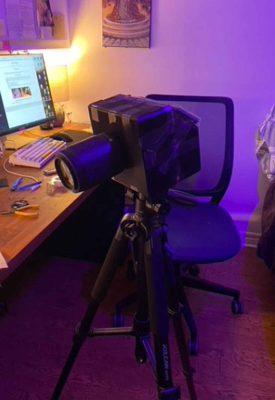

Making my own Camera
Or at least trying to...
I love photography and cameras! I've always been fascinated with the way old and new cameras worked.
I read and learned about all their inner workings on my free time because I was so intrigued as to how they worked!
I had a Nikon 35mm Camera from the 1970s and shooting with it made me fall in love with cameras even more and now I can't be stopped!
I'm also a big sucker for making projects with the Raspberry Pi, so when I saw that the Pi foundation made a high
quality camera module, I knew what my next big project was gonna be.
First step was; Putting the parts I needed together. I needed:
- A computer - the Raspberry Pi 4
- A sensor - The HQ Camera Module
- A Display
- A Battery
- Buttons for control
- A case to hold everything
- Some sort of mount for the camera and the lenses
----- Version 0.1 -----
This was the first version of the camera that I put together; I call it, Version 0.1!
Held together by good ol' cardboard and hot glue, this was just what I needed to test out my idea.
It served its purpose, and it was able to take pictures and it got me hopeful that this project was do-able, but it was
far from perfect. 1) It didn't have any buttons so I had to bring a keyboard around to type commands into the terminal. 2)
I couldn't see what I was taking a picture of since I didn't have a GUI 3) It was really awkward to hold and use and so much more :(


So I desperately needed to address these issues...
----- Version 1 -----
This was the first design that I 3D printed. It's just a rectangle with screw holes for the sensor and a big hole for the
components to slide into. It wasn't great, but it was my first design and it got the job done. This version also included
the first version of the GUI! Using the picamera2 library which was/is still in beta, I put together a lil' program that
allowed me to control the gain, exposure and white balance of the camera via some buttons on a breadboard which connected
to the pi via the GPIO pins.
One big problem in this version was the the NIKON to C-Mount
adapter that I was using; The distance that the sensor sat at relative to the lens was too far and made it so that the focus would be a
lot closer than it needed to be. It was great for macro-photography, but not for the purposes that I needed. With that being said, I
included a neat close-up that I took of my thumb pressing the button on a new board that I was working on.

----- Version 2 -----
This version had a lot of upgrades. First of all, the enclosure was significantly larger and sturdier than the last one.
This helped with the managing of cables and the strength of the camera body. It also featured a screw hole in the bottom
so that I could mount it to a tripod!
In addition to that, this new design had the lens mount built into the body which made everything simpler but also way better
for the rigidity of the camera chassis. Since lenses are the heaviest component of the camera (at least in this case)
having the lens mount be built-in to the body made it so that the camera didn't sag towards the front. It also helped a great
deal with the wobbly-ness of the camera. Sturdier body = More secure and stable sensor = Better Images.
Unfortunately, this version still used the same c-mount adapter, so it had the same issue as the last version where the focus was too close.
This is addressed in the next design.


----- Version 3 -----
I took a fair bit of time designing this one and I'm pretty happy with how it turned out!
The components fit into the camera body and it functions! It's still not perfect, but so far the camera is able to take solid pictures
thanks to the 12 megapixel sensor that is being used, and the RAW photos captures surprisingly sharp images when paired with a good lens!
You can view some of the photos I've taken with the camera in the Photography section of the site!
This version took over a day to print but luckily all the components fit with little to no wiggle room! The battery, Pi, sensor, cables, etc...
all fit snuggly and don't cause any issues.
The lens distance issue was fixed in this revision! I decided to include a mounting solution that
isn't so conventional. I took a NIKON lens mount and put it really close to where the sensor sits, and the goal was to be able to use adapters
so that I can use other lenses as well. In other words, the camera uses a NIKON mount that takes a NIKON mount to ____ adapter so that I can use
Canon, Minolta, Sony, etc... lenses! It also allows me to use longer or shorter adapters for macro photography or whatever I require.
What's next?
There's still lots of work ahead and I will updating the site as progress is made, but here's a run-down of some of things that I'll be looking into next:
The camera battery is just a portable USB battery charger that I ripped out of its case and stuck into the camera body, and it'd be better to have
a battery that isn't as yanky. In order to charge the battery the entire camera has to be taken apart since the battery sits in the middle of the camera body.
The buttons overlap the case, so the board that holds the buttons needs to be trimmed down. Also the take photo button needs to be in the top handle part
of the camera so that it's easier to take photos.
I've also been looking into adding video functionalities, but not just regular video, RAW video! This video format contains significantly higher detail and
information, at the cost of larger file sizes, but that's a sacrifice I think is worth it. The quality of RAW video is spectacular, and I've seen it done with
this sensor, and I've managed to have it work in the past, so that will be a really nice feature to have to make this camera more well rounded.
Not sure if I'll be implementing RAW video functionality or if I'll just experiment with more regular video formats. I'll see once I do more testing!
My favourite future addition I think will be the addition of my Neural Network that identifies wether an image is in focus or not
(that's the project that's after this one on the site!). Using tensorflow lite, I can connect my model to the camera feed and have it let me know wether the
view is in-focus or out-of-focus!